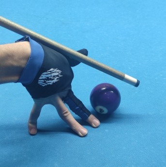

Now that you are familiar with pool equipment, let’s put it into use! It’s time to grab the cue, chalk it, and hit some balls! But how do you do that? This page will help you find out.
Chapter 1: Aiming
Before you hit a pool ball with your cue stick, you need to understand how to take it to a desired spot on the table. In other words, you need to learn to aim. There are two basic approaches to aiming a shot: “ghost ball” and “center to edge”. Let’s look at both of them in more detail.
Ghost Ball
The system involves imagining a "ghost" ball in the position where the object ball will be when it's hit. Normally, you need to follow these steps to perform a ghost ball aiming:
1
Stand in front of the object ball and the pocket, so that you can draw with your sight an imaginary line running from the pocket center towards you, striking through the object ball and ending on its outside. Make sure the imaginary line and your line of sight coincide.
2
Fixate your sight on the point where your imaginary line crosses the back of the object ball – that’s your CP (contact point). It is always opposite from where the pocket is relative to the object ball.
3
With your eyes focused on the CP, move your body towards the cue ball and position yourself behind it.
4
Now comes the key part: looking at the CP, you need to imagine a different pool ball sitting in close proximity to the object ball – the ghost ball.
5
Once you have visualized it, locate its center, and draw an imaginary line from it to the center of the cue ball. That is the line your cue ball needs to travel along to send the object ball into the pocket.
In short, this method has you visualize the exact spot on the table where your cue ball needs to travel, in order to hit the object ball and send it into the pocket.
Center To Edge
The Center to Edge (CTE) method is another way to aim accurately in pool. Instead of imagining a ghost ball, this method focuses on understanding the 2D circle representation of the cue ball and the object ball.
To use the CTE method, follow these steps:
1
Find the center of both the cue ball and the object ball by identifying their 2D circle representation.
2
Compare both centers to create a line that starts from where you want to hit the cue ball to where you want the cue ball to hit the object ball.
3
Adjust the shot by comparing the edges of the cue ball and the object ball.
In summary, the CTE method involves finding the centers of both the cue ball and object ball to create an aiming line and using the 2D representation of the balls to adjust the shot.
Chapter 2: Bridge
The bridge is a critical part of a pool player's technique, as it provides stability and control when making shots. The bridge is the support for the cue as it slides through the player's fingers. There are several types of bridges in pool, each with its advantages and disadvantages.
Open Bridge
Open bridge is the most universal type of bridge. To build it, first place your hand on the table with your fingers spread apart. Bend your knuckles to move them up and drag your 4 fingers a bit backwards to make a pyramid shape with your hand. Next, clasp your thumb to the side of your hand to create a comfortable nest for the cue to slide freely.
Closed Bridge
Closed bridge is needed when the shot requires additional power to be able to hold the cue in place. To build a closed bridge, spread your middle, ring and pinky finger apart and secure your hand on the table. Clasp the thumb to your middle finger and run the cue over the nest. Wrap your index finger around the cue and join it with your thumb. The cue should slide through the loop in your fingers.
Rail Bridge
Rail bridge is good for shots when the cue ball is sitting close or on the rail. Place your hand flat on the rail surface. Place the cue right beside, parallel to your hand. Put your index finger over the cue and push the fingertip onto the rail. The cue should slide against the rail and your fingers.
High Bridge

High bridge comes in handy when your cue ball is surrounded by other balls that take up table space for your hand. Bend your 4 fingers down and place them against the tablecloth to form a stable structure. Clasp your thumb to the rest of your hand as in the open bridge. Place the cue over the nest and slide it down towards the cue ball. You can move your fingers in and out to adjust the elevation of the bridge.
Side note When you can’t reach your cue ball to make a desired shot, you can use a cue extension or a mechanical bridge.
Chapter 3: Stance
How to stand by the pool table? Although every player has their own favorite kind of stance, and some players simply adjust their body based on experience and feel, there is an established standard on how to position yourself by the pool table. Let’s break this question down into parts and outline the steps needed to reach the correct body position.
Note This walkthrough will show an example of left-handed stance. If you are right-handed, simply mirror the steps for your right arm and leg.
Step 1: Your starting position is where you wound up after the aiming. You are standing behind the cue ball-object ball line, with your eyes focused on the ghost ball / contact point. Your left hand is holding the cue by the butt, and your right hand is holding the shaft.
Step 2: With your left foot going first, start walking towards the table. Normally, you only need two steps before you get down on the shot: a left foot and a right foot.
Pro Tip: Make sure you are precisely following the shot line. Your walking path should extend into the cue ball-object ball line.
Step 3: Leg position. Put your left leg back so that it bears the weight of your body. Bend your right leg and put it in front. Depending on the shot situation, you can change the weight distribution to balance your body. Maintaining a stable leg position is key to successful shot making.
Step 4: Bend forward over the table bringing your right arm forward and placing it on the cloth (bridge). Bring your left arm back and bend your elbow. Make sure the elbow is facing backwards and creates a 90-degree angle with your forearm. Place your head slightly over the cue and look at the shot line.
Chapter 4: Stroke
Now that you have done everything to prepare your body for the shot, it’s time to make the stroke. Shot making can also be broken down into a few steps:
Step 1: Pre-strokes. These are preparatory cue swings that you need in order to get the feel of your future shot. As you are standing down by the table, bring your left forearm (the arm that’s holding the cue, assuming you are left-handed) back and then forward past its original position. Make sure your hand is loose and you are not gripping the cue too tightly. Do a couple of such swings and try to feel the weight of the cue stick. Important: make sure your elbow remains stationary at all times. Only your forearm should move.
Step 2: If you are comfortable moving the cue back and forth and you know where you want to hit the object ball, you can perform the stroke. Straighten your left arm bringing the cue back as much as your bridge allows it. Now move the cue all the way forward and hit the center of the cue ball with the tip.
If all the steps were performed correctly, the cue ball should travel forward, hit the object ball, and make it into the center of the pocket. This is how a regular shot is made.
Some important notes:
👉 Every shot should be made using just the weight of the cue stick. Never try to apply additional force by straining your arm muscles. That way you can mess up the aiming and tire yourself faster.
👉 Don’t lower your elbow after you’ve made a stroke. Don’t change your position either. Even the slightest body movement can distort the shot line and cause a miss.
👉 Make sure your body position is comfortable on each and every shot. If you feel discomfort at any step of shot preparation, it is a good idea to stand back up and redo the steps from scratch.
Here is a video of the whole shot making process including 4 chapters: aiming, bridging, stance, and stroke:
Congratulations! You are now able to make shots. You can go on and learn about controlling the cue ball on the table, but I would recommend that you practice first. Come back as soon as you master your shot making!
 2
2